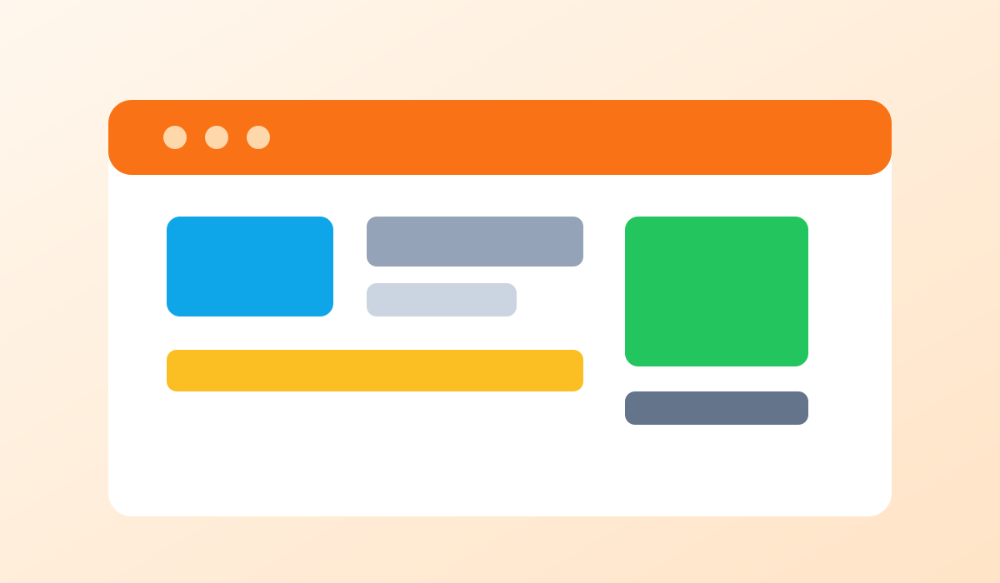

Digital Detox Blog
Creating Healthy Tech Boundaries in a Busy World
Boundaries help technology serve your goals instead of interrupting them. Start by deciding when you are available and when you are not.
Use focused work blocks, turn off alerts during meals, and define communication windows for messages and email. Clear rules reduce decision fatigue.
Share your boundaries with people around you so expectations stay realistic and supportive.
Back to Blog